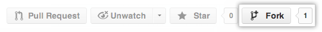

使用GitHub提供的Fork模式，可以簡單地將一個倉庫複製一份，並且修改，等待修改完成後，再發起Pull request讓原始的倉庫將變更合併。這樣的方式讓開源軟體的開發變得更加容易，也讓許多貢獻更加輕鬆地被整合進軟體當中。
完成接下來部分所示的Fork之後，可以與一般倉庫一樣進行add、commit與branch等操作。等到開發完成之後，便可以發起Pull request。
同樣地，GitHub官方也一份英文版的教學文件。
到我們倉庫的GitHub頁面上，點選Fork按鈕：（圖片來在GitHub官方教學文件）
成功Fork倉庫之後，這個倉庫會出現在自己的倉庫列表當中，並且會在頁面理標示Fork的來源。有了倉庫之後，現在可以將這個倉庫下載到自己的本地電腦中，以便進行設計與更新。執行下列指令：git clone https://github.com/<username>/2013-NCU-CSIE-Website-Design-Competition.git
現在雖然我們已經下載了原始的倉庫，不過預設遠端是Fork過後的倉庫，我們需要用以下指令：git remote add upstream https://github.com/NCU-CSIE-SNMG/2013-NCU-CSIE-Website-Design-Competition.git
如果我們的倉庫有更動，可以使用：git fetch upstream